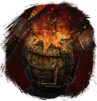

Открыть в интерактивной вики →
| Уровень | 80 |
|---|---|
| Сила (PvE) | лёгк. 3047 / норм. 4462 / тяжел. 6781 |
| Аспект арены | Gherudu |
| Здоровье | 30 000 |
| Мана | 9000 |
| Выносливость | 14 000 |
Статистика
 |  |  | |||
| Уровень: 60 | Уровень: 75 | Уровень: 95 | |||
Здоровье: 12 500 Мана: 4 000 Выносливость: 8 000 | Здоровье: 25 000 Мана: 4 000 Выносливость: 8 000 | Здоровье: 50 000 Мана: 4 000 Выносливость: 8 000 |
Зоны атаки
Умения
| Таран Укус Мощный Удар | Бросок камнем Групповая дальняя атака |
Команда
-
Локация
Склад Ослабленного Конструкта
Иммунитеты / особые умения
Устойчивость к кровотечению
Дроп
| Рары | Синергетики | Эпики | |||
 | | | |||
| Прочее: - | |||||
Вариант 2: Описание

Вариант 2: Статистика
| | | | |||
| Уровень: 65 | Уровень: 80 | Уровень: 100 | |||
Здоровье: 13 500 Мана: 9 000 Выносливость: 14 000 | Здоровье: 27 000 Мана: 9 000 Выносливость: 14 000 | Здоровье: 54 000 Мана: 9 000 Выносливость: 14 000 |
Вариант 2: Зоны атаки
Вариант 2: Умения
| Таран Групповая физическая атака Мощный Удар Обычная атака Фронтальный Удар Повреждение брони Ранящий удар | Огненная сфера |
Вариант 2: Команда
-
Вариант 2: Локация
Склад Ослабленного Конструкта
Вариант 2: Иммунитеты / особые умения
Устойчивость к кровотечению
Вариант 2: Дроп
| Рары | Синергетики | Эпики | |||
| | | | |||
| Прочее: - | |||||
Вариант 3: Описание

Вариант 3: Статистика
| | | | |||
| Уровень: 70 | Уровень: 85 | Уровень: 105 | |||
Здоровье: 7 000 Мана: 13 000 Выносливость: 4 000 | Здоровье: 11 000 Мана: 13 000 Выносливость: 4 000 | Здоровье: 22 000 Мана: 13 000 Выносливость: 4 000 |
Вариант 3: Зоны атаки
Вариант 3: Умения
| Энергетический разряд Шаровая молния Бросок камнем Ранение | Огненная сфера Групповое оглушение Энергетическое шило |
Вариант 3: Команда
-
Вариант 3: Локация
Склад Ослабленного Конструкта
Вариант 3: Иммунитеты / особые умения
Устойчивость к кровотечению
Вариант 3: Дроп
| Рары | Синергетики | Эпики | |||
 Рары Рары Рары Рары Рары Рары Рары Рары Рары для питомцев Рары для питомцев Рары для питомцев Рары для питомцев Рары для питомцев Рары для питомцев Рары для питомцев Рары для питомцев | 20-40 ур. |  Эпики Эпики | |||
Прочее:  Элементарный глиф Элементарный глиф  Ученический глиф Ученический глиф  Путь страха Путь страха | |||||